La historia de las redes neuronales tiene sus raíces en los años 1940, cuando el neurofisiólogo Warren McCulloch y el matemático Walter Pitts desarrollaron el primer modelo matemático que simulaba una neurona artificial, conocido como la neurona de McCulloch-Pitts.
Este modelo era muy básico y no lograba capturar la complejidad de las redes neuronales biológicas, pero sentó las bases para investigaciones futuras.
Durante las décadas de 1950 y 1960, se desarrollaron otros modelos importantes, como el perceptrón de Frank Rosenblatt en 1958, una red neuronal simple que podía aprender a clasificar patrones. Sin embargo, las limitaciones de estos primeros modelos, como la incapacidad del perceptrón para resolver problemas no lineales, llevaron a un periodo de desinterés en las redes neuronales conocido como el "invierno de la inteligencia artificial" en los años 1970.
La situación cambió en los años 1980, cuando Geoffrey Hinton y otros investigadores reintrodujeron el concepto de retropropagación del error (backpropagation), una técnica que permitió entrenar redes neuronales con múltiples capas. Esto marcó el renacimiento del interés en las redes neuronales, llevando eventualmente al desarrollo del deep learning.
A partir del año 2006, se introdujeron las Deep Belief Networks (DBN) por Hinton, que demostraron que se podían entrenar redes profundas de manera efectiva. En 2014, las Generative Adversarial Networks (GAN), creadas por Ian Goodfellow, marcaron otro avance significativo en la creación de modelos generativos.
En resumen, el desarrollo de las redes neuronales ha pasado por varias etapas, desde los primeros modelos matemáticos en los años 1940, hasta los modernos modelos de deep learning que se utilizan en la actualidad para aplicaciones avanzadas como la visión por computadora y el procesamiento de lenguaje natural.
El entrenamiento de una red neuronal implica ajustar los pesos que conectan las neuronas. Durante el entrenamiento, la red procesa un conjunto de datos de entrenamiento, ajustando sus pesos en función del error que comete en las predicciones. Los pasos fundamentales en el proceso de entrenamiento son:
1)Propagación hacia adelante (Forward Propagation): Los datos pasan desde la capa de entrada hasta la capa de salida, calculando la predicción de la red.
2)Cálculo del Error: El error entre la predicción de la red y el valor real (ground truth) se calcula usando una función de costo o pérdida, como el error cuadrático medio o la entropía cruzada.
3)Retropropagación del Error (Backpropagation): El error se propaga hacia atrás a través de la red, ajustando los pesos de las neuronas mediante técnicas de optimización, como el descenso de gradiente (gradient descent).
4)Actualización de Pesos: Los pesos se ajustan para minimizar la función de error, y este proceso se repite en múltiples iteraciones o épocas hasta que el error es lo suficientemente bajo o se alcanza un umbral de convergencia.
Estas redes son utilizadas principalmente en el reconocimiento de imágenes y videos. Se caracterizan por tener capas que aplican filtros específicos sobre las imágenes para detectar patrones o características visuales como bordes y texturas. CNNs son utilizadas en sistemas de visión artificial como la clasificación de objetos, detección de rostros y reconocimiento de escritura. Ejemplos de uso incluyen aplicaciones en automóviles autónomos y diagnóstico médico mediante imágenes de resonancias magnéticas.
Este tipo de red neuronal es ideal para tareas que involucran secuencias de datos, como el procesamiento de lenguaje natural y la traducción automática. Las RNNs tienen una "memoria" que les permite retener información de entradas anteriores, lo que las hace adecuadas para tareas que requieren la comprensión del contexto temporal, como la predicción de series de tiempo o el análisis de texto en chatbots.

Son redes más comunes y se componen de varias capas de neuronas conectadas. Se utilizan en una amplia gama de aplicaciones, incluyendo el reconocimiento de patrones, la predicción de datos y la clasificación. Estas redes son muy útiles en problemas como la predicción de precios de mercado o clasificación de clientes según sus hábitos de compra.
Las redes neuronales convolucionales son la base de muchos sistemas de reconocimiento facial, clasificación de imágenes médicas y análisis de videos. tambien es utilizado para la conduccion autonoma ya que permiten que los vehículos autónomos reconozcan y respondan a su entorno utilizan redes neuronales para interpretar datos visuales en tiempo real

Plataformas como Netflix,Amazon,Spotify,etc utilizan redes neuronales para predecir las preferencias de los usuarios y recomendar contenido personalizado.
Por medio del Procesamiento del Lenguaje Natural (PLN), las redes neuronales recurrentes y transformers han mejorado enormemente la traducción automática y los asistentes virtuales